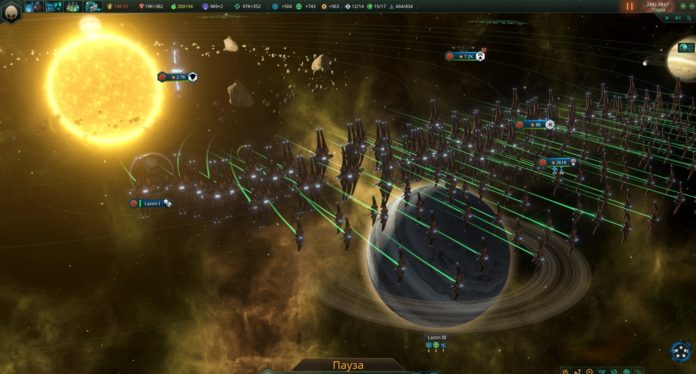

Немножечко информации
Угасшие — это остатки, осколки когда-то величайших цивилизаций галактики, переживших распад и существующих в небольших скоплениях звездных систем. Эта раса имеет свой дизайн кораблей и построек. К сожалению играть за них нельзя.
В отличие от вас, на момент старта игры Угасшие уже имеют мощные флоты, которые по уровню вооружения превосходят ваш флот в несколько раз…или даже сотен раз!Поэтому не рекомендуется, не имея перевеса в военной силе нападать на этих существ и вообще каким-либо образом обижать их — в противном случае вы либо быстро закончите игру, либо будите бесконечно долго куковать с 1 системой.
Кроме того, Угасшие империи не всегда интересуются делами, а также политикой молодых рас в целом. Хотя, иногда они могут обратиться к вам и потребовать передать им какое-то поселение на планете или талантливого ученого. Рекомендуется дать им то, что они хотят, так как если повезет — они откроют вам свои границы и будут в очень хороших с вами отношениях. Есть шанс того, что в дальнейшем Угасшие будут давать вам подарки в виде ресурсов, технологий и прочих прелестей. На старте игры все империи, имеющиеся в галактике находятся в «стагнационном режиме» и не расширяют своих территорий
Это означает то, что они могут снова создавать свои флоты смерти и вести агрессивные войны с целью расширения своих территорий. Если им не мешать — то они разрастутся довольно таки быстро.
В определенный момент может произойти событие, названное «Война в небесах«, означающее то, что пробужденные Угасшие империи начали войну друг с другом. В этом конфликте вам — молодой расе будет уготована особая роль…какая? Пусть это останется небольшой загадкой
Виды империй
Всего существует 4 типа(5) с дополнением Synthetic Dawn «Угасших империй»
Если вкратце,то: Наблюдатели любят общаться с молодыми расами и скорее всего воевать с тем, кто порабощает молодые расы и устраивает бесчинства в виде геноцида. Хранители знаний будут недовольны если вы скажем будите использовать оскорбления а также соперничество. Святые хранители уничтожат вас если вы колонизируете их священные планеты(у таких планет имеются спец модификаторы). Они очень сильно не любят ИИ, поэтому если вы используете роботов, они могут потребовать от вас его запрета. Ну и последние — изоляционисты аннигилируют любого, кто осмелится занимать рядом с ними ЛЮБЫЕ планеты Отдельно стоит рассказать про пятый тип Угасшей империи, которая доступна только после приобретения DLC Synthetic Dawn. Имя им «Древние хранители».Это Машинная империя с гештальт-сознанием. Древние хранители в отличие от подобных Угасших абсолютно непредсказуемы. Они могут дать подарок без причины или потребовать помощь посредством различных заданий, которые могут предоставить неиссякаемый бонус или временный, но серьёзный штраф. К тому же Древние хранители не объявляют войны но им может быть объявлена война. Они не понимают, когда их оскорбляют.